Every render is the SKELETAL_3D backend drawing the same deterministic simulation the sprite backend draws. The release itself is a simulation event (gk.dist, GK_DIST in match.js): the plan decides the kind, the authoritative release / drop point, the release tick, the ball's outgoing velocity and the keeper's facing; the presentation reads the plan and explains it — the rendered ball follows an authored in-hand path that ends ON the authoritative point at the release tick, and from that tick the rendered ball IS the simulation ball (it is never held longer, never released earlier, never re-parented). Gates below prove the simulation traces are byte-identical with the animation on or off, and unchanged for every pre-existing fixture.
Sections: simulation audit · contract + timing architecture · taxonomy · PUT DOWN · HAND ROLL · OVERARM THROW · KICKED CLEARANCE · angled facings · free play (production path) · verification · remaining issues
| mechanic | before this work (match.js) | status |
|---|---|---|
| held ball | b.held = "GK" set by the keeper contact resolver (one site), exclT = ∞; gkHeldBallStep pins the ball to gk.handNow every tick | authoritative, unchanged |
| release of a held ball | did not exist: nothing cleared b.held except a scenario reset — possession was terminal | ADDED as the minimal contract (section 2) |
| throw / roll / put-down mechanics | did not exist (no keeper throw, no roll, no place; no keeper handedness) | ADDED: fixed launch laws per kind (no RNG) |
| kicked clearance | the kick launch family ptFam("CLEAR", D) exists for players (T = clamp(D/11, 1.2, 2.6), v = [D/T, g·T/2·1.15]); "PUNT" only as an alias to the LACES_POWER charge family; no keeper kick, no drop-kick, no foot preference for the keeper (t.pfoot is the shooter's foot) | REUSED the CLEAR launch law; the drop + foot contact moments ADDED |
| ball physics after release | gravity, air drag, roll friction (μ 4.2), bounce (REST 0.55): the same integrator every ball uses | authoritative, unchanged — the released ball is an ordinary free ball |
| keeper facing | gk.facing = atan2(ball − gk) every tick (ball-tracking); no target-facing state | ADDED: during a plan the facing is the plan's target direction (authoritative) |
| dribbling / normal ball control | player pickup rule (t.now ≥ exclT, reach, z < 1.4, v < 5.5 → b.ctrl) applies to the FIELD PLAYER entity only; the keeper entity has no dribble controller | put-down ends as a free ball at the keeper's feet; the keeper cannot dribble (no second engine built — see issues) |
| keeper locomotion with the ball | none: a held ball pins the keeper (positioning is skipped) | entry is always stationary (after a standing catch: the upright HOLD; after a diving catch: the get-up) |
GK_DIST, gkDistributionStart, gkDistributionStep) + release timing architectureA fixture / tool sets t.gkDist = { kind, target?, side?, foot? }. When the ball has been held for the secure time (standing catches 1.0 s; diving / collapsing catches 3.5 s) the plan starts: facing = direction to the target (authoritative, immediate), the keeper stands still, the commit record is kept (possession lifecycle continues). Plan times are fixed (no RNG): tRelease = t0 + prep. At tRelease the simulation puts the ball ON the release point (a fixed offset in the keeper's frame: ahead / lateral toward the throwing side / height) with the kind's launch velocity, clears held, sets the pickup exclusion, and records the event. PUNT has two moments: DROP (tDrop = t0 + prep: the ball is placed at the drop point and free-falls under the ordinary physics) and KICK (the tick the falling ball reaches kick height 0.45 m — an event on the ball, predicted at the drop as tKick for the presentation; the CLEAR launch is applied where the ball IS). After the follow-through (tEnd) the plan is cleared, the commit released and normal positioning resumes.
| kind | prep (s) | release point [ahead, lateral, height] m | launch law | follow-through (s) | hand / foot convention |
|---|---|---|---|---|---|
| THROW | 0.90 | [0.85, 0.28, 1.78] | horizontal 17 m/s toward the target; vz so the arc lands at the target (T = D / 17) | 0.70 | hand on the target's side of the keeper's current frame (central → right) |
| ROLL | 1.00 | [0.60, 0.22, 0.00] (on the pitch) | 9 m/s along the ground toward the target (friction stops it) | 0.70 | same rule |
| PUNT | 0.75 (drop) | drop [0.55, 0.12, 1.05]; kick at z 0.45 (predicted +0.35 s, drift 0.3 m/s) | CLEAR family for the target distance (≤ 45 m): [D/T, g·T/2·1.15] | 0.80 after the kick | foot from the request (default R) |
| PUTDOWN | 0.85 | [0.50, 0.00, 0.00] (on the pitch) | 0.4 m/s forward (stops within 2 cm) — a free ball, pickup exclusion 0.15 s | 0.60 | two hands, symmetric |
Release validation (recorded by the 3D backend at every authoritative event, GK3D.distRecords): authoritative ball position + velocity, the rendered ball on the last held tick and its residual to the authoritative point, hand-centre-to-ball-surface distance (0.03 m = the palm offset; two hands for the drop), foot-surface-to-ball-surface at the kick, simulation root vs presentation root, simulation facing vs presentation facing, the held flag after the event, and the kick prediction error (predicted vs actual drop-kick contact). DO NOT RETIME: no plan time is read from the animation; the authored motions are keyed on the plan's own times (u = preparation progress, v = follow-through progress), and where the simulation's secure time runs out before the presentation is standing (a plan starting mid-get-up) the plan still starts and the record flags it (startDown).
dist)| motion | simulation plan kind | biomechanics (authored RIGHT; LEFT = mirror of poses, ball path and hand roles) | ball in the hands | feet |
|---|---|---|---|---|
| DIST_PUTDOWN | PUTDOWN | hips / knees flex (pelvis −0.42 m), trunk folds ~80°, both hands carry the ball down to the pitch 0.5 m ahead of the feet; hands open; rise to SET | two hands on its sides all the way to the pitch | stance (turn steps only) |
| DIST_ROLL | ROLL | ball off the chest to the rolling side (both hands), the far hand leaves, backswing (arm back, hips turned 42°, knees loaded), a long lunge onto the rolling-side foot, trunk folded: the hand releases the ball ON the pitch ahead of the front foot; low follow-through; step back to the stance | two hands → one hand (ball at the end of the arm line) | lunge step (world-fixed), two recovery steps |
| DIST_THROW | THROW | ball to the throwing shoulder (both hands), the opposite foot steps toward the target, wind-up: arm extended back at shoulder height, hips + shoulders turned away ~44°, weight on the back foot, free arm sights the target; drive: hips rotate through, weight onto the front foot (pelvis +0.22 m), the arm comes over the top — release forward-up at full extension; follow-through down and across the body; the back foot steps up; both feet settle over the root | two hands → one hand | front-foot step, back-foot step-up, two settle steps |
| DIST_PUNT | PUNT | both hands carry the ball forward off the chest, the plant foot steps; DROP (hands open at waist height); the kicking leg swings back (knee folded) and through the falling ball at knee height — contact on the laces (the foot is solved onto the SIMULATION ball as it falls, two passes), high follow-through, the leg lands ahead, settle to the stance | two hands → free fall (the rendered ball is the simulation ball from the drop) | plant step; kicking foot free from the backswing until it lands |
Locomotion entry: stationary in every case (the held ball pins the keeper). Entry pose: whatever the body is in when the plan starts — the upright HOLD after a standing catch, STRAIGHTEN for a long gather / high catch, SET / REPOSITION after a diving catch (get-up complete at 3.5 s in every free-play case measured); the plan captures that pose as its first key, blends the arms from their last solved elbows / wrists over 120 ms, decays any torso assist, and carries the pelvis momentum of a mid-step start. The presentation turns the body to the authoritative facing over the first 30–35 % of the preparation (feet re-plant as turn steps, one foot at a time, when a plant is > 0.18 m from its stance point).
plan: kind PUTDOWN · target [98.739, 33.951] · authoritative facing 180.0° · side R / foot R · t0 1.900 s (tick 114) · release 2.750 s (tick 165) · end 3.350 s · release point [101.239, 33.951, 0] · phases: HOLD (t113) → LOWER (t124) → PLACE (t150) → RELEASE (t165) → RELEASE_RISE (t173) → SET (t191)
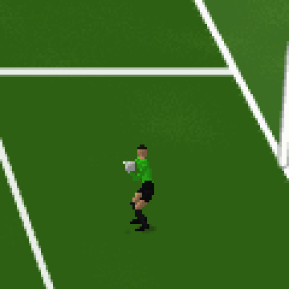
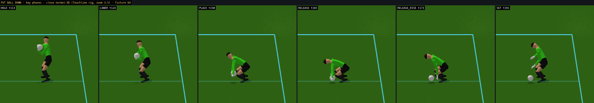
key phases (gameplay camera)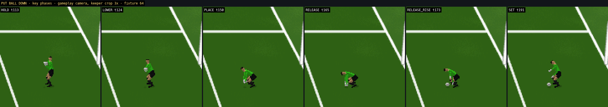
RELEASE frames (authoritative tick 165)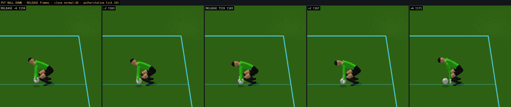
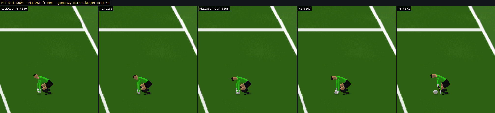
skeleton + distribution debug view (separate capture; clean frames above carry no overlay)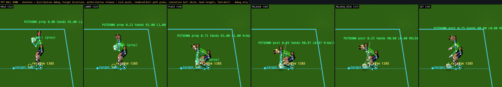
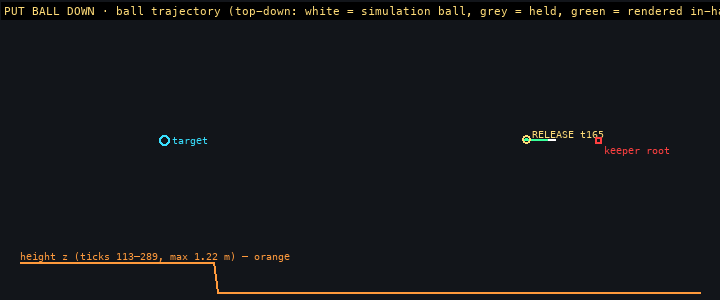
| event | tick / t | authoritative ball (x, y, z) | rendered ball, last held tick | residual (rendered→authoritative) | hand→ball surface | foot→ball surface | speed / direction | facing sim / pres | held after | kick prediction err |
|---|---|---|---|---|---|---|---|---|---|---|
| RELEASE | 165 / 2.750 s | [101.239, 33.951, 0] | [101.239, 33.951, 0.115] | 0.009 m | 0.046 m | — | 0.40 m/s · 180.0° | 180.0° / 180.0° (err 0.0°) | no | — |
plan: kind ROLL · target [96, 26] · authoritative facing -125.8° · side R / foot R · t0 1.900 s (tick 114) · release 2.900 s (tick 174) · end 3.600 s · release point [101.566, 33.335, 0] · phases: HOLD (t113) → CARRY (t123) → BACKSWING (t140) → RELEASE_LOW (t161) → RELEASE (t174) → FOLLOW_LOW (t184) → SET (t205)
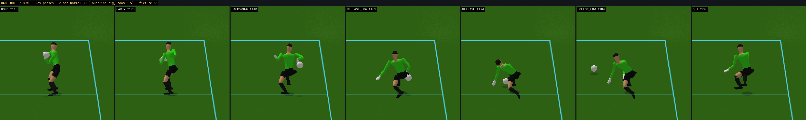
key phases (gameplay camera)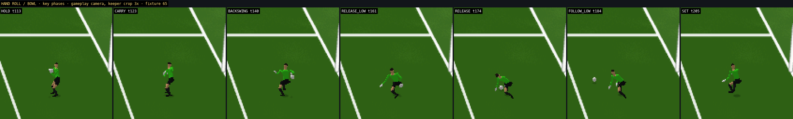
RELEASE frames (authoritative tick 174)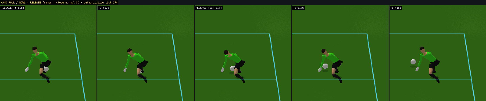
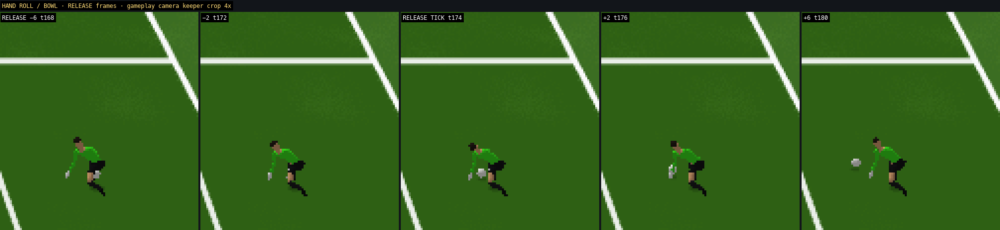
skeleton + distribution debug view (separate capture; clean frames above carry no overlay)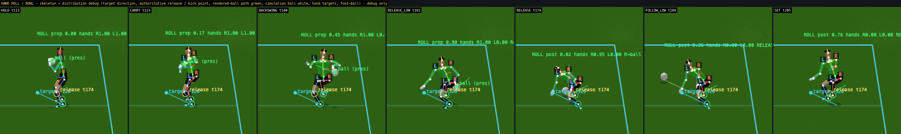
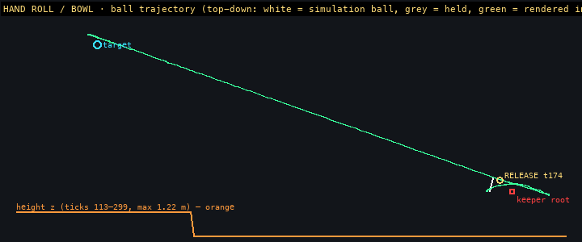
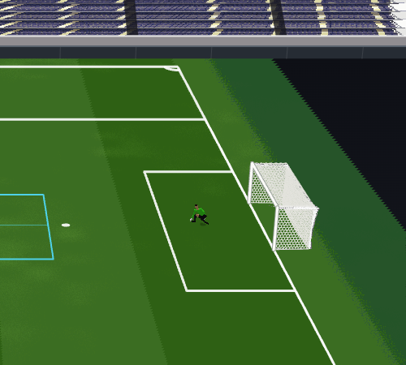
| event | tick / t | authoritative ball (x, y, z) | rendered ball, last held tick | residual (rendered→authoritative) | hand→ball surface | foot→ball surface | speed / direction | facing sim / pres | held after | kick prediction err |
|---|---|---|---|---|---|---|---|---|---|---|
| RELEASE | 174 / 2.900 s | [101.566, 33.335, 0] | [101.582, 33.354, 0.124] | 0.030 m | 0.033 m | — | 9.00 m/s · -125.8° | -125.8° / 234.2° (err 0.0°) | no | — |
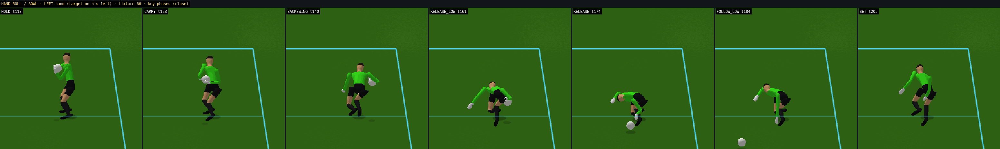
| event | tick / t | authoritative ball (x, y, z) | rendered ball, last held tick | residual (rendered→authoritative) | hand→ball surface | foot→ball surface | speed / direction | facing sim / pres | held after | kick prediction err |
|---|---|---|---|---|---|---|---|---|---|---|
| RELEASE | 174 / 2.900 s | [101.566, 34.665, 0] | [101.582, 34.646, 0.124] | 0.030 m | 0.033 m | — | 9.00 m/s · 125.8° | 125.8° / -234.2° (err 0.0°) | no | — |
plan: kind THROW · target [78, 24] · authoritative facing -157.3° · side R / foot R · t0 1.900 s (tick 114) · release 2.800 s (tick 168) · end 3.500 s · release point [101.063, 33.364, 1.78] · phases: HOLD (t113) → CARRY (t122) → WIND_UP (t137) → RELEASE_OVER (t156) → RELEASE (t168) → FOLLOW_ACROSS (t177) → SET (t198)
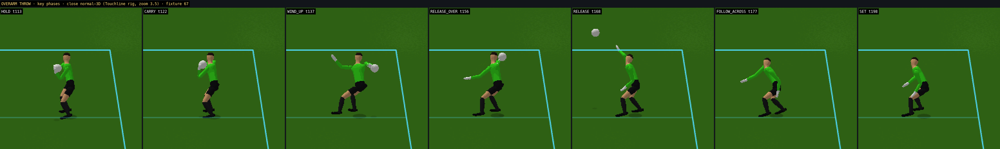
key phases (gameplay camera)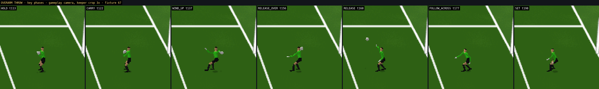
RELEASE frames (authoritative tick 168)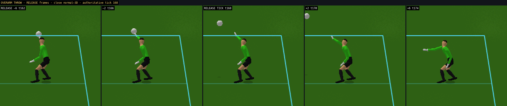
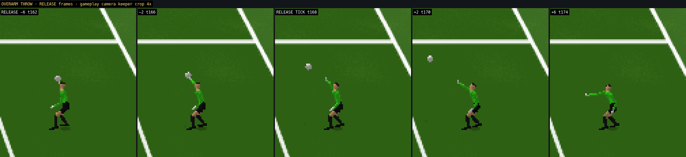
skeleton + distribution debug view (separate capture; clean frames above carry no overlay)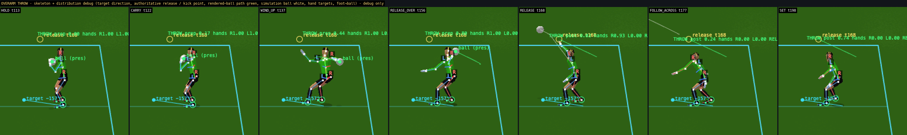
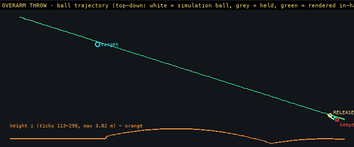
| event | tick / t | authoritative ball (x, y, z) | rendered ball, last held tick | residual (rendered→authoritative) | hand→ball surface | foot→ball surface | speed / direction | facing sim / pres | held after | kick prediction err |
|---|---|---|---|---|---|---|---|---|---|---|
| RELEASE | 168 / 2.800 s | [101.063, 33.364, 1.78] | [101.099, 33.377, 1.767] | 0.041 m | 0.033 m | — | 18.11 m/s · -157.3° | -157.3° / 202.7° (err 0.0°) | no | — |
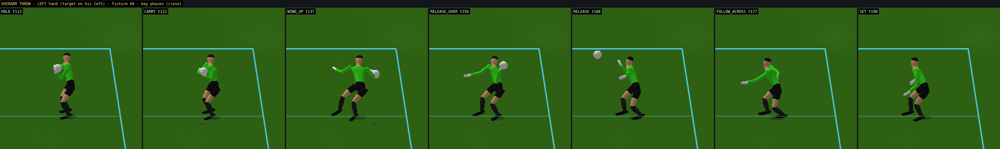
| event | tick / t | authoritative ball (x, y, z) | rendered ball, last held tick | residual (rendered→authoritative) | hand→ball surface | foot→ball surface | speed / direction | facing sim / pres | held after | kick prediction err |
|---|---|---|---|---|---|---|---|---|---|---|
| RELEASE | 168 / 2.800 s | [101.063, 34.636, 1.78] | [101.099, 34.623, 1.767] | 0.041 m | 0.033 m | — | 18.11 m/s · 157.3° | 157.3° / -202.7° (err 0.0°) | no | — |
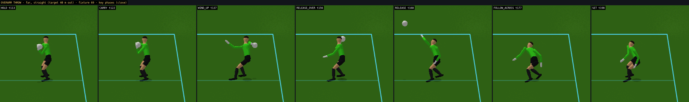
| event | tick / t | authoritative ball (x, y, z) | rendered ball, last held tick | residual (rendered→authoritative) | hand→ball surface | foot→ball surface | speed / direction | facing sim / pres | held after | kick prediction err |
|---|---|---|---|---|---|---|---|---|---|---|
| RELEASE | 168 / 2.800 s | [100.889, 33.672, 1.78] | [100.927, 33.67, 1.767] | 0.041 m | 0.033 m | — | 20.09 m/s · 179.9° | 179.9° / 179.9° (err 0.0°) | no | — |
plan: kind PUNT · target [55, 34] · authoritative facing 179.9° · side R / foot R · t0 1.900 s (tick 114) · release 2.650 s (tick 159) · kick predicted 3.000 s (tick 180) actual 3.017 s (tick 181) · end 3.800 s · release point [101.189, 33.831, 1.05] · phases: HOLD (t113) → CARRY_FWD (t124) → DROP (t146) → DROP (t159) → BACKSWING (t163) → KICK (t174) → KICK (t181) → FOLLOW_HIGH (t186) → LAND (t199) → SET (t217)
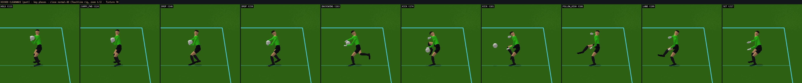
key phases (gameplay camera)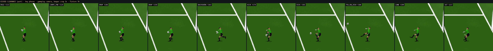
DROP frames (authoritative tick 159)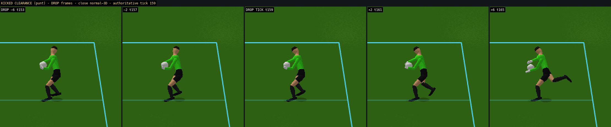
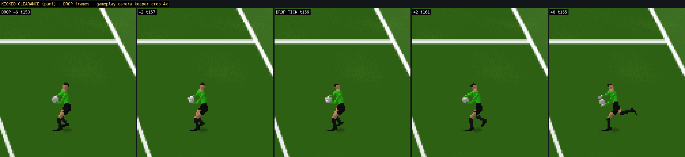
KICK frames (authoritative tick 181)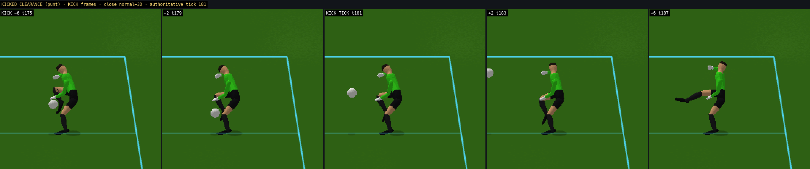
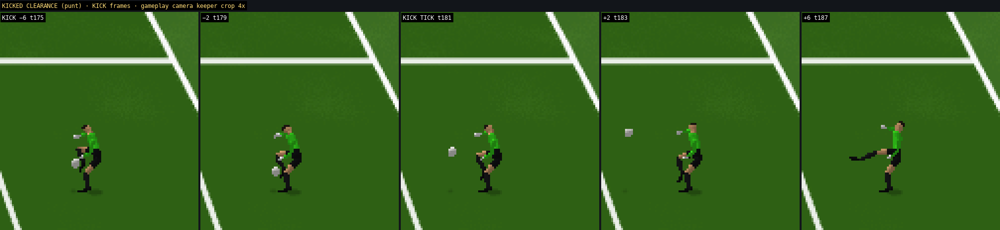
skeleton + distribution debug view (separate capture; clean frames above carry no overlay)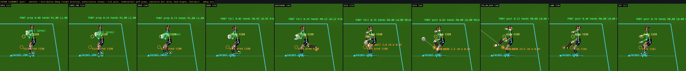
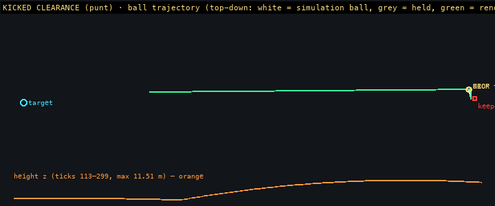
| event | tick / t | authoritative ball (x, y, z) | rendered ball, last held tick | residual (rendered→authoritative) | hand→ball surface | foot→ball surface | speed / direction | facing sim / pres | held after | kick prediction err |
|---|---|---|---|---|---|---|---|---|---|---|
| DROP | 159 / 2.650 s | [101.189, 33.831, 1.05] | [101.193, 33.831, 1.052] | 0.005 m | 0.044 m | — | 0.30 m/s · 179.9° | 179.9° / 179.9° (err 0.0°) | no | — |
| KICK | 181 / 3.017 s | [101.13, 33.831, 0.421] | [101.13, 33.831, 0.421] | 0.000 m | — | 0.009 m | 22.69 m/s · 179.9° | 179.9° / 179.9° (err 0.0°) | no | 0.055 m / 0.017 s |
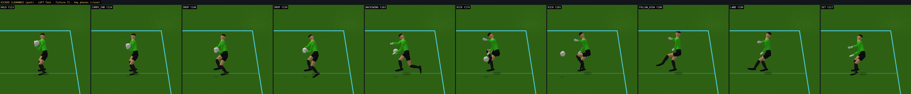
| event | tick / t | authoritative ball (x, y, z) | rendered ball, last held tick | residual (rendered→authoritative) | hand→ball surface | foot→ball surface | speed / direction | facing sim / pres | held after | kick prediction err |
|---|---|---|---|---|---|---|---|---|---|---|
| DROP | 159 / 2.650 s | [101.189, 34.169, 1.05] | [101.193, 34.169, 1.052] | 0.005 m | 0.041 m | — | 0.30 m/s · -179.9° | -179.9° / -179.9° (err 0.0°) | no | — |
| KICK | 181 / 3.017 s | [101.13, 34.169, 0.421] | [101.13, 34.169, 0.421] | 0.000 m | — | 0.009 m | 22.69 m/s · -179.9° | -179.9° / -179.9° (err 0.0°) | no | 0.055 m / 0.017 s |
Each fixture is an angled catch (the keeper faces the shooter, not the pitch) followed by a plan toward a target elsewhere: the simulation's facing jumps to the target direction at the plan start; the presentation turns the body over the first 30–35 % of the preparation with one-foot-at-a-time re-plants. The facing error at the release tick is 0° in every case (records).
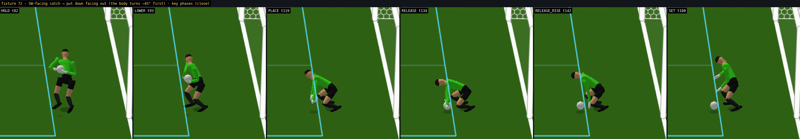
| event | tick / t | authoritative ball (x, y, z) | rendered ball, last held tick | residual (rendered→authoritative) | hand→ball surface | foot→ball surface | speed / direction | facing sim / pres | held after | kick prediction err |
|---|---|---|---|---|---|---|---|---|---|---|
| RELEASE | 134 / 2.233 s | [102.894, 37.184, 0] | [102.894, 37.183, 0.115] | 0.009 m | 0.046 m | — | 0.40 m/s · 180.0° | 180.0° / 180.0° (err 0.0°) | no | — |
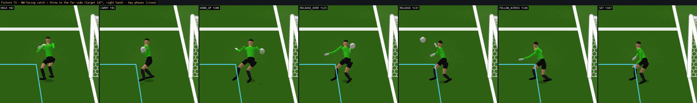
| event | tick / t | authoritative ball (x, y, z) | rendered ball, last held tick | residual (rendered→authoritative) | hand→ball surface | foot→ball surface | speed / direction | facing sim / pres | held after | kick prediction err |
|---|---|---|---|---|---|---|---|---|---|---|
| RELEASE | 137 / 2.283 s | [102.834, 31.514, 1.78] | [102.867, 31.494, 1.767] | 0.041 m | 0.033 m | — | 18.37 m/s · 147.0° | 147.0° / -213.0° (err 0.0°) | no | — |
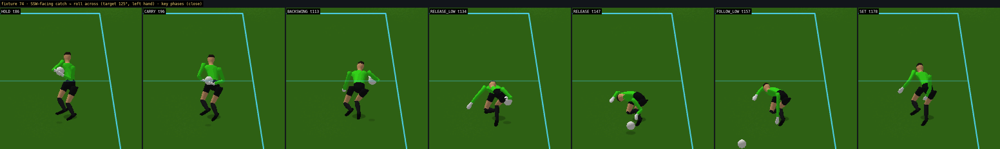
| event | tick / t | authoritative ball (x, y, z) | rendered ball, last held tick | residual (rendered→authoritative) | hand→ball surface | foot→ball surface | speed / direction | facing sim / pres | held after | kick prediction err |
|---|---|---|---|---|---|---|---|---|---|---|
| RELEASE | 147 / 2.450 s | [101.727, 37.05, 0] | [101.742, 37.031, 0.124] | 0.030 m | 0.033 m | — | 9.00 m/s · 124.9° | 124.9° / 124.9° (err 0.0°) | no | — |
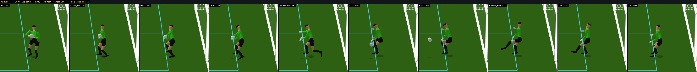
| event | tick / t | authoritative ball (x, y, z) | rendered ball, last held tick | residual (rendered→authoritative) | hand→ball surface | foot→ball surface | speed / direction | facing sim / pres | held after | kick prediction err |
|---|---|---|---|---|---|---|---|---|---|---|
| DROP | 128 / 2.133 s | [102.833, 37.229, 1.05] | [102.838, 37.229, 1.052] | 0.005 m | 0.041 m | — | 0.30 m/s · -172.3° | -172.3° / 187.7° (err 0.0°) | no | — |
| KICK | 150 / 2.500 s | [102.775, 37.221, 0.421] | [102.775, 37.221, 0.421] | 0.000 m | — | 0.009 m | 22.69 m/s · -172.3° | -172.3° / 187.7° (err 0.0°) | no | 0.055 m / 0.017 s |
Tool: gk3d_freeplay.js --dist [--frames]. The request cycles PUTDOWN / ROLL / THROW / PUNT per shot with targets and feet from the seed; the simulation decides whether the catch is held and when the plan starts (secure time by catch kind), the presentation explains it. Frames below are the authoritative event ticks captured on the fly (clean gameplay camera, keeper crop).
seed 7: 120 shots on the real kick pipeline, 44 contacts, 16 held catches → 16 distribution plans started (PUNT 2, PUTDOWN 3, ROLL 6, THROW 5), 16 released, 16 completed; started while the body was still down: none; held flag still set after a release: none; distribution anatomy flags: [(6, 2), (37, 2), (73, 1)]; rendered→authoritative residual at the release max 0.041 m (mean 0.023), hand→surface max 0.055 m, foot→surface max 0.009 m; continuity assertions on plan boundaries: none.
| shot | kind | catch motion → start phase | started down | done | events (residual m, hand / foot surface m) | anatomy flags | assertions |
|---|---|---|---|---|---|---|---|
| 6 | THROW | LOW_COLLAPSE → SET | yes | RELEASE t4034 res 0.041 hand 0.033 foot None | 2 | ||
| 7 | PUNT | CHEST_CATCH → HOLD | yes | DROP t4463 res 0.005 hand 0.041 foot None, KICK t4485 res 0.000 hand None foot 0.009 | 0 | ||
| 9 | ROLL | LOW_COLLAPSE → SET | yes | RELEASE t5634 res 0.030 hand 0.033 foot None | 0 | ||
| 34 | THROW | NEAR_BODY → HOLD | yes | RELEASE t20109 res 0.041 hand 0.033 foot None | 0 | ||
| 37 | ROLL | FAR_DIVE → REPOSITION | yes | RELEASE t21774 res 0.030 hand 0.032 foot None | 2 | ||
| 44 | PUTDOWN | LOW_COLLAPSE → SET | yes | RELEASE t25634 res 0.009 hand 0.046 foot None | 0 | ||
| 45 | ROLL | HIGH_CATCH → STRAIGHTEN | yes | RELEASE t26013 res 0.030 hand 0.033 foot None | 0 | ||
| 57 | ROLL | LOW_COLLAPSE → SET | yes | RELEASE t32943 res 0.030 hand 0.033 foot None | 0 | ||
| 64 | PUTDOWN | GATHER → STRAIGHTEN | yes | RELEASE t36789 res 0.009 hand 0.055 foot None | 0 | ||
| 66 | THROW | HIGH_CATCH → STRAIGHTEN | yes | RELEASE t37362 res 0.041 hand 0.033 foot None | 0 | ||
| 70 | THROW | CHEST_CATCH → HOLD | yes | RELEASE t39656 res 0.041 hand 0.033 foot None | 0 | ||
| 73 | ROLL | NEAR_BODY → HOLD | yes | RELEASE t41217 res 0.030 hand 0.033 foot None | 1 | ||
| 80 | PUTDOWN | CHEST_CATCH → HOLD | yes | RELEASE t45176 res 0.009 hand 0.046 foot None | 0 | ||
| 86 | THROW | NEAR_BODY → HOLD | yes | RELEASE t48458 res 0.041 hand 0.033 foot None | 0 | RECEIVE→CRADLE | |
| 89 | ROLL | LOW_COLLAPSE → SET | yes | RELEASE t49701 res 0.030 hand 0.033 foot None | 0 | ||
| 103 | PUNT | LOW_COLLAPSE → SET | yes | DROP t57635 res 0.005 hand 0.044 foot None, KICK t57657 res 0.000 hand None foot 0.009 | 0 |
seed 11 (with event frames): 160 shots on the real kick pipeline, 60 contacts, 18 held catches → 18 distribution plans started (PUNT 2, PUTDOWN 4, ROLL 8, THROW 4), 18 released, 18 completed; started while the body was still down: none; held flag still set after a release: none; distribution anatomy flags: [(114, 1)]; rendered→authoritative residual at the release max 0.041 m (mean 0.022), hand→surface max 0.056 m, foot→surface max 0.010 m; continuity assertions on plan boundaries: none.
| shot | kind | catch motion → start phase | started down | done | events (residual m, hand / foot surface m) | anatomy flags | assertions |
|---|---|---|---|---|---|---|---|
| 0 | PUTDOWN | GATHER → STRAIGHTEN | yes | RELEASE t353 res 0.009 hand 0.055 foot None | 0 | ||
| 8 | PUTDOWN | GATHER → STRAIGHTEN | yes | RELEASE t4914 res 0.009 hand 0.055 foot None | 0 | ||
| 17 | ROLL | HIGH_CATCH → STRAIGHTEN | yes | RELEASE t10064 res 0.030 hand 0.033 foot None | 0 | ||
| 21 | ROLL | GATHER → STRAIGHTEN | yes | RELEASE t12266 res 0.030 hand 0.032 foot None | 0 | ||
| 24 | PUTDOWN | LOW_DIVE → SET | yes | RELEASE t13995 res 0.009 hand 0.046 foot None | 0 | ||
| 25 | ROLL | HIGH_CATCH → STRAIGHTEN | yes | RELEASE t14390 res 0.030 hand 0.033 foot None | 0 | ||
| 27 | PUNT | HIGH_CATCH → STRAIGHTEN | yes | DROP t15413 res 0.005 hand 0.042 foot None, KICK t15435 res 0.000 hand None foot 0.01 | 0 | ||
| 30 | THROW | HIGH_CATCH → STRAIGHTEN | yes | RELEASE t16979 res 0.041 hand 0.033 foot None | 0 | ||
| 35 | PUNT | FAR_DIVE → SET | yes | DROP t20021 res 0.005 hand 0.044 foot None, KICK t20043 res 0.000 hand None foot 0.009 | 0 | ||
| 45 | ROLL | FOOT_SAVE → SET | yes | RELEASE t25673 res 0.030 hand 0.033 foot None | 0 | ||
| 50 | THROW | CHEST_CATCH → HOLD | yes | RELEASE t28500 res 0.041 hand 0.033 foot None | 0 | ||
| 65 | ROLL | GATHER → STRAIGHTEN | yes | RELEASE t37238 res 0.030 hand 0.032 foot None | 0 | ||
| 81 | ROLL | HIGH_CATCH → STRAIGHTEN | yes | RELEASE t46479 res 0.030 hand 0.033 foot None | 0 | ||
| 93 | ROLL | GATHER → STRAIGHTEN | yes | RELEASE t52976 res 0.030 hand 0.032 foot None | 0 | ||
| 114 | THROW | LOW_COLLAPSE → SET | yes | RELEASE t64970 res 0.041 hand 0.033 foot None | 1 | ||
| 126 | THROW | FOOT_SAVE → SET | yes | RELEASE t72213 res 0.041 hand 0.033 foot None | 0 | ||
| 133 | ROLL | GATHER → STRAIGHTEN | yes | RELEASE t75693 res 0.030 hand 0.032 foot None | 0 | ||
| 156 | PUTDOWN | GATHER → STRAIGHTEN | yes | RELEASE t88874 res 0.009 hand 0.056 foot None | 0 |
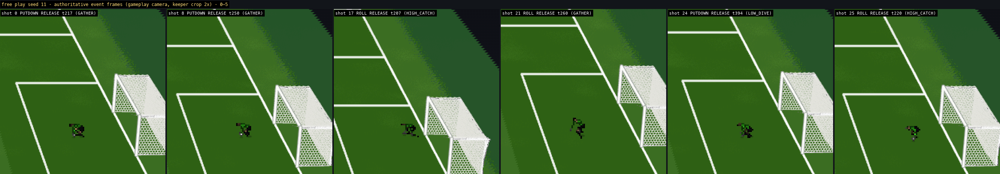
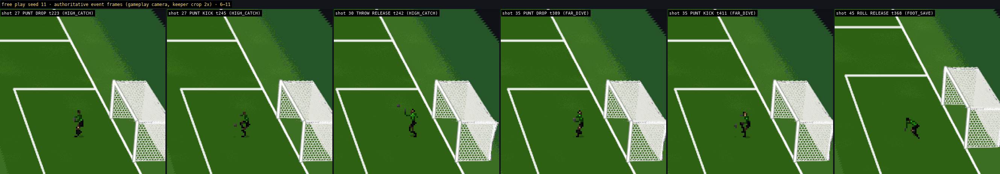
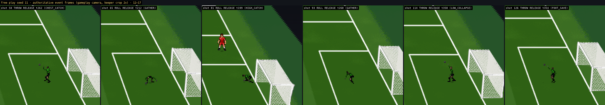
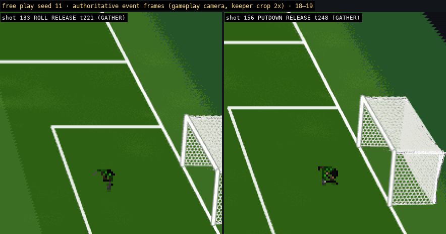
| check | result |
|---|---|
SPRITE vs SKELETAL_3D simulation-neutrality gate, all 76 fixtures, 260 ticks (gk3d_gate.js) | IDENTICAL — 76 / 76 identical hashes; the 64 pre-existing fixtures are byte-identical to the stored v11 record (64 / 64) |
| same gate on the 12 distribution fixtures, 300 ticks (through every RELEASE / DROP / KICK) | IDENTICAL — the release is the simulation's whichever backend draws |
animation OFF (nothing drawn) vs SKELETAL_3D drawn every tick, 76 fixtures (gk_anim_gate.js --anim off) | identical final-tick root / hand / ball / held flag / contact |
| v6 far dive (fixture 42, frozen): 28 joints × 320 ticks vs the stored manifest | 0 differing joint samples |
| FOOT_SAVE v9 (fixtures 55–60) vs the v10 manifest | 0 differing joint samples |
| CATCH group v11 (fixture 45) vs a manifest rendered from the previous commit (git worktree f0c3979, port 8125) | 0 differing joint samples |
| free play seed 7 WITHOUT distributions vs the stored v11 record (114 shots) | 0 differing fields (commit / contact ticks, family, motion, side, outcome, residuals, phases, assertions) |
| free play WITH distributions (production path) | seed 7: 120 shots, 44 contacts, 16 held → 16 plans (PUNT 2, PUTDOWN 3, ROLL 6, THROW 5), 16 released, 16 completed; started down: none; held after a release: none; anatomy flags: [(6, 2), (37, 2), (73, 1)]; residual max 0.041 m (mean 0.023), hand→surface max 0.055 m, foot→surface max 0.009; assertions on plan boundaries: none; other assertions (pre-existing classes): [18, 25, 86, 98]; page errors 0 seed 11: 160 shots, 60 contacts, 18 held → 18 plans (PUNT 2, PUTDOWN 4, ROLL 8, THROW 4), 18 released, 18 completed; started down: none; held after a release: none; anatomy flags: [(114, 1)]; residual max 0.041 m (mean 0.022), hand→surface max 0.056 m, foot→surface max 0.01; assertions on plan boundaries: none; other assertions (pre-existing classes): [14, 94, 120, 149, 154]; page errors 0 |
| normal dribbling / kick system | untouched (the CLEAR launch family is called for the punt, not modified; the field-player controller is not entered) |
| records | verification/: GATE_sprite_vs_3d_76_fixtures_260ticks.md · GATE_sprite_vs_3d_distribution_fixtures_300ticks.md · GATE_animation_off_vs_on_76_fixtures.md · RELEASE_RECORDS_12_fixtures.md · MANIFEST_distribution_12_fixtures.json · FREEPLAY_distribution_summary.json · FREEPLAY_3d_dist_*_seed7/11.json |
b.ctrl → dribbling) belongs to the field-player entity; the keeper is a separate entity with no dribble controller. PUT DOWN therefore ends as a free ball at the keeper's feet (pickup exclusion 0.15 s) with the keeper standing over it — the "transition to normal dribbling" requires production to make the keeper a controllable player. No second goalkeeper dribbling engine was built.startDown: 0 cases in 280 free-play shots) or mid-reposition (1 case, carried by the momentum rule). DO NOT RETIME holds: the presentation never delays the release.review_artifacts/astra_gk_distribution_reference/).req.side / req.foot unchanged.